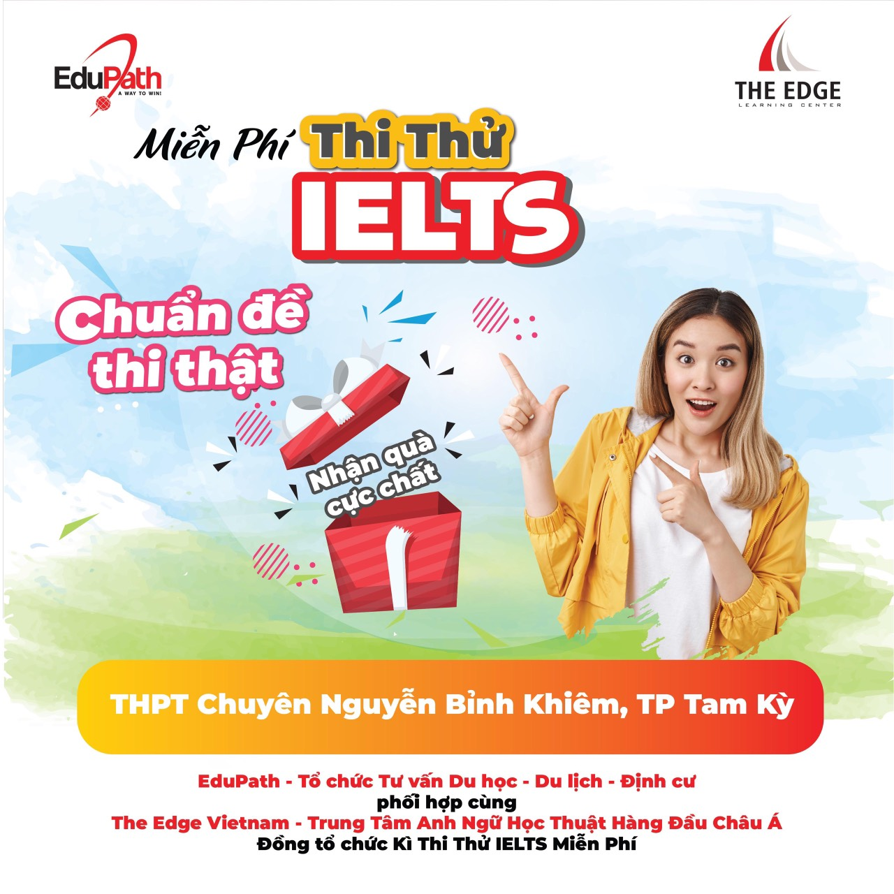
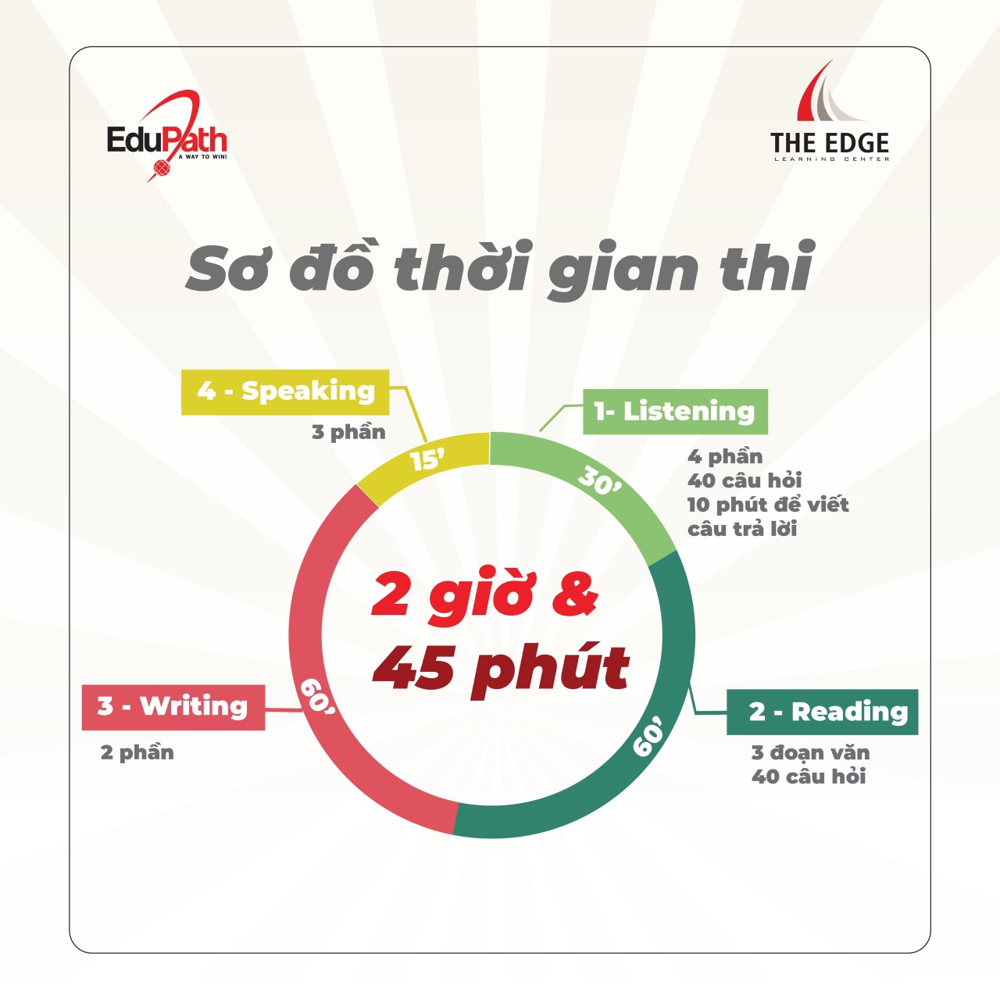
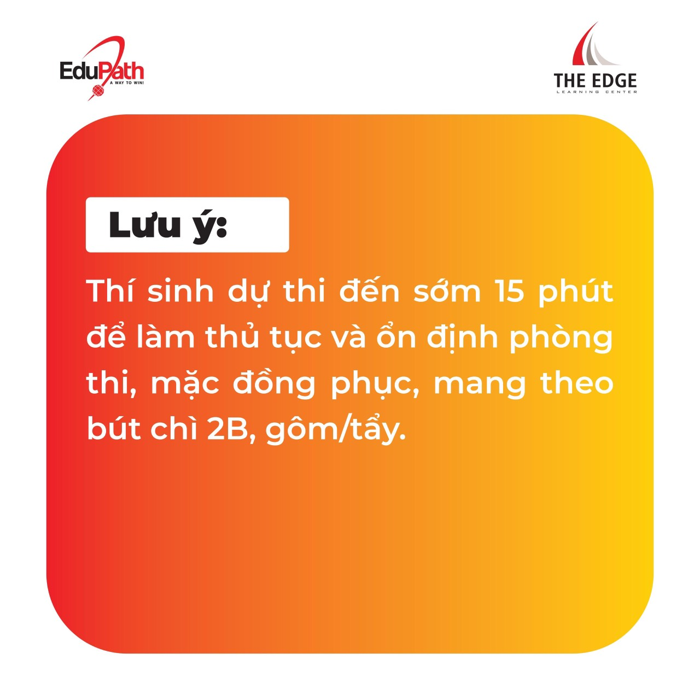

Thông báo về việc tổ chức Kì thi thử IELTS miễn phí của Công ty TNHH Education Path

Lần cập nhật cuối lúc Thứ sáu, 17 Tháng 7 2020 16:56 Viết bởi Administrator Thứ sáu, 17 Tháng 7 2020 16:41



Tin mới hơn:
- 28/08/2020 20:29 - Cậu học trò nghèo đạt điểm 10 môn Địa lý
- 28/08/2020 16:41 - Ước mơ làm phóng viên
- 27/08/2020 15:42 - Nữ sinh đạt điểm 10 môn sử ở Quảng Nam làm bài tro…
- 25/07/2020 14:08 - Thư mời tham dự sự kiện đối thoại Chào tương lai 2…
- 23/07/2020 08:32 - Thông báo Thể lệ trao thưởng Quỹ ươm mầm tài năng …
Tin cũ hơn:
- 22/06/2020 09:45 - Trường THPT chuyên Nguyễn Bỉnh Khiêm xứng đáng là …
- 27/05/2020 08:48 - Cuộc thi trực tuyến tìm hiểu Nghị quyết Đại hội đạ…
- 07/05/2020 17:00 - Bộ đề thi tham khảo kỳ thi tốt nghiệp THPT năm 202…
- 08/04/2020 14:44 - Kết quả vượt mong đợi trong Cuộc thi Olympic du họ…
- 07/04/2020 16:08 - Kết quả Olympic Tin học 2020 cùng danh sách các tr…